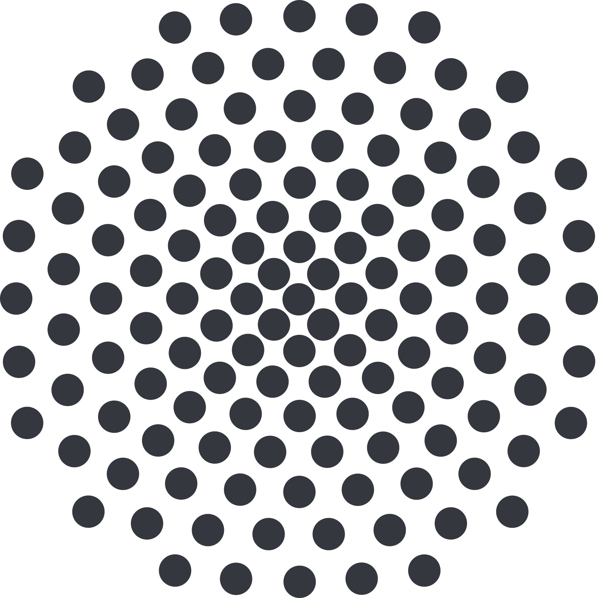
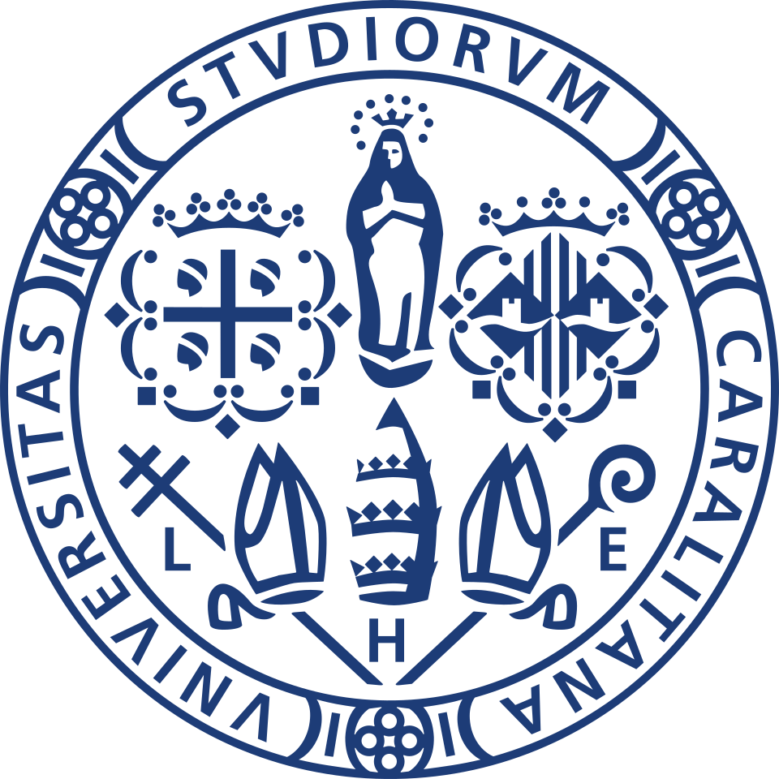

Starting in September, I will join the Ph.D. program at the Max Planck Research School for Intelligent Systems, where I will work on foundation models for structured data under the supervision of Prof. Steffen Staab.
Previously, I obtained my B.Sc. and M.Sc. in Artificial Intelligence at the University of Cagliari, where I also worked as a research assistant in recommender systems.
Publications
Conformal Prediction for Statistically Reliable LLM-as-a-Judge in Recommender Systems
CIKM 2026
hopwise: A Python Library for Explainable Recommendation based on Path Reasoning over Knowledge Graphs
CIKM 2025
article
code
Effective and Transparent Course Recommendation through Causal Reasoning with Language Models
IIR 2025
article
Low-Resource Course Recommendation for Professional Training Associations
WAILS 2025
article
KGGLM A Generative Language Model for Generalizable Knowledge Graph Representation Learning in Recommendation
RecSys 2024
article
code
Conference Tutorials
How to Build Explainable Recommender Systems using Path Reasoning on Knowledge Graphs: A Tutorial with hopwise
UMAP 2026
article
tutorial page
Path-based Reasoning on Knowledge Graphs for Explainable Recommender Systems
CIKM 2026
Experience
Doctoral Researcher,
09/2026 – Present

Doctoral Researcher,
09/2026 – Present

Research Assistant,
08/2024 – 07/2026
Education
Master’s Degree in Artificial Intelligence,
10/2024 – 07/2026
Excellence Program,
10/2024 – 07/2026
Bachelor’s Degree in Computer Science,
10/2021 – 07/2024